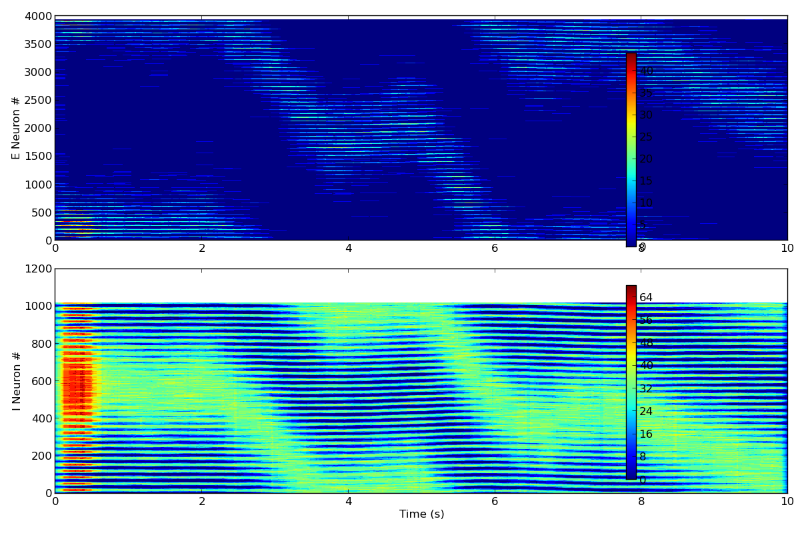
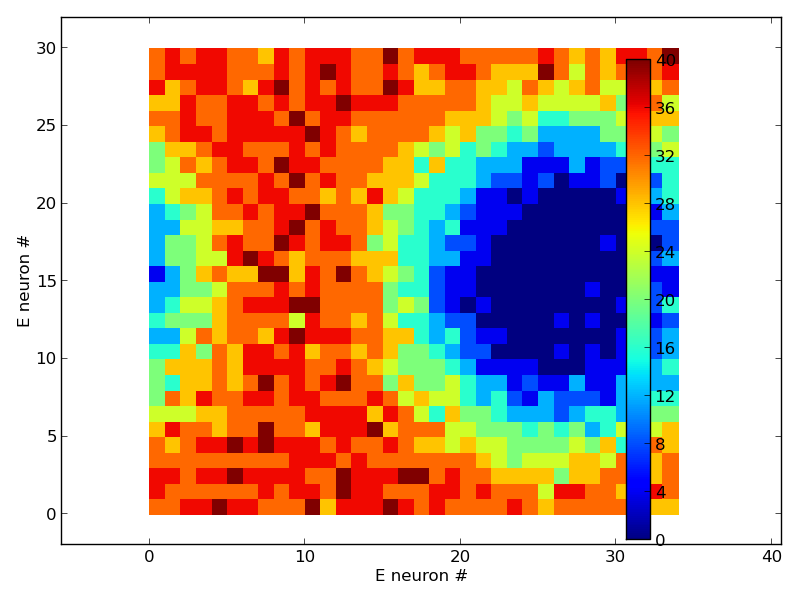
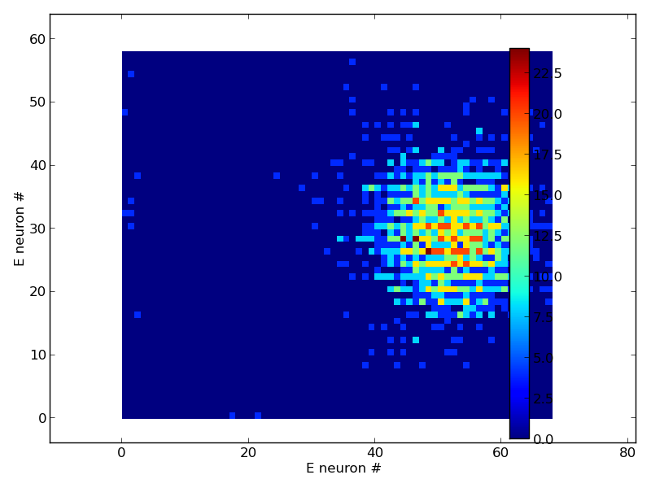

Grid cell model
===============
This archive contains a spiking continuous attractor model of grid cells found
in medial entorhinal cortex (MEC) of rodents. It was used for modeling the
theta-nested gamma activity and grid firing fields in MEC and the results have
been published in [PASTOLL2013]_. The code in this archive reproduces parts of
the figures found in the published article.
For installation and prerequisites necessary to run the model see the
notes below or the INSTALL.rst file in this directory.
.. [PASTOLL2013] Pastoll, H., Solanka, L., van Rossum, M. C. W., & Nolan, M. F.
(2013). Feedback inhibition enables theta-nested gamma oscillations and grid
firing fields. Neuron, 77(1), 141–154. doi:10.1016/j.neuron.2012.11.032
When the model runs as described below it produces png images:



a datafile and some traces in pdfs (not shown).
20200323 Note from the ModelDB Administrator: Ian Hawes update steps
below were simplified by a adding local copy of his Dockerfile to the
archive so it no longer needs to be downloaded and also including an
ubuntu 18.04 docker install notes file. Please follow the install
notes in ubuntu18.04_docker_install_notes.txt to install docker on an
ubuntu 18.04 system. You will also need to make sure the python files
in this zip archive have excutable permission by executing the
following in the GridCellModel folder:
chmod -R 755 *
# If the above command fails you may need to run it with an "sudo " in front
# Also create an output folder
mkdir grid_cell_model/output
Then following Ian's below instructions below should work (except you
no longer need to download the Dockerfile).
20200306 Update from Ian Hawes:
I have uploaded a Dockerfile here: https://gist.github.com/4iar/bd25c175614419e2a92c591d74a8dc29
Example steps to get a simulation running (I ran these commands on Ubuntu with Docker installed) :
1. Save the Dockerfile above into the GridCellModel folder
2. From the GridCellModel folder, build the Docker image:
docker build . -t pastoll2013
3. From the GridCellModel folder, run a simulation:
docker run -it -v ${PWD}:/code -w /code/grid_cell_model pastoll2013 ./submit_basic_grids.py
If you prefer not to use Docker, you can try copying the commands from the
Dockerfile into your terminal. I tested the environment on Ubuntu 14.04, but it
should work with other versions as long as you can get those python packages
installed.